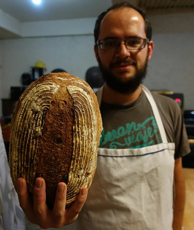

Acerca de mí
Me llamo Pablo Sánchez. En la vida he dado varias vueltas, he estudiado música, literatura, gastronomía, actualmente me dedico al desarrollo web. Empecé a aprender cómo hacer pan por pura curiosidad en el 2008. Me parecía algo bastante misterioso, intrigante, el proceso de transformación que ocurre en la masa. Conforme más aprendía sobre lo que es la fermentación más apasionante me parecía el hecho de que la masa es algo vivo, a diferencia de otro tipo de preparaciones culinarias. Durante varios años era simplemente un hobby, algo que hacía por pura diversión, muy de vez en cuando, para impresionar a amigos y familiares, era un buen tema de conversación: "Hola me llamo Pablo y hago mi propio pan."
Más tarde aprendí sobre la fermentación natural, la masa madre, y supongo que ahí fue donde quedé permanentemente enganchado. El hecho de que uno puede tener su cultivo de masa madre y pasarlo de generación en generación por décadas, incluso siglos, me parece absolutamente fascinante.
Mientras estudiaba literatura en la universidad, en mis momentos de frustración siempre amenazaba, en broma, a mis amigos: "Un día de estos voy a mandar la carrera por un tubo y me voy a volver panadero." Bueno, pues el día finalmente llegó en 2014 cuando un querido amigo abrió un café y me sugirió que yo le surtiera baguettes y chapatas y así nació La Mitad del Camino - pan artesanal. Fue un negocio de venta de pan casero, principalmente de masa madre, que tuve durante varios años.
A principios de 2020 tomé la desición de cerrar ese negocio y cambiar de carrera. Fue por varias razones, las ventas habían bajado mucho y el trabajo era cada vez más pesado, pero además en 2019 nació mi hija, Verónica, y para poder pasar más tiempo con ella fue que decidí dedicarme a algo que me permita pasar más tiempo en casa y tener un horario un poco más “normal”.
Ahora ya no me dedico profesionalmente a la panadería, pero para que el conocimiento que acumulé durante aquéllos años no se pierda, y también para retomar y no perder esta pasión y seguir aprendiendo, fue que decidí crear este sitio, para compartir con el mundo un poco de lo que aprendí y sigo aprendiendo porque me sigue apasionando la panadería y la fermentación natural, sigo creyendo que podemos hacer el mundo un lugar un poco mejor si retomamos un poco de este arte ya casi perdido de hacer nuestro propio pan y otros alimentos.
En este sitio encontrarás algunas de mis recetas, consejos prácticos sobre diferentes aspectos del proceso. También recomendaré algunos libros y otros recursos que me han servido a mí para aprender buena parte lo que sé. Espero que puedas encontrar aquí algo de lo que buscas.